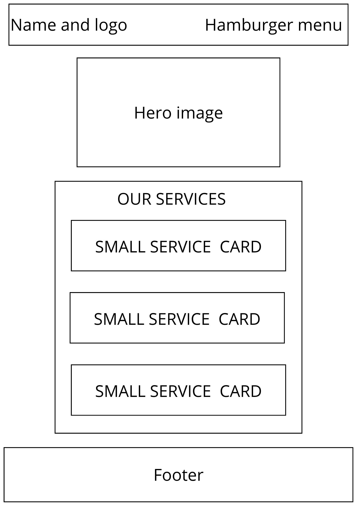
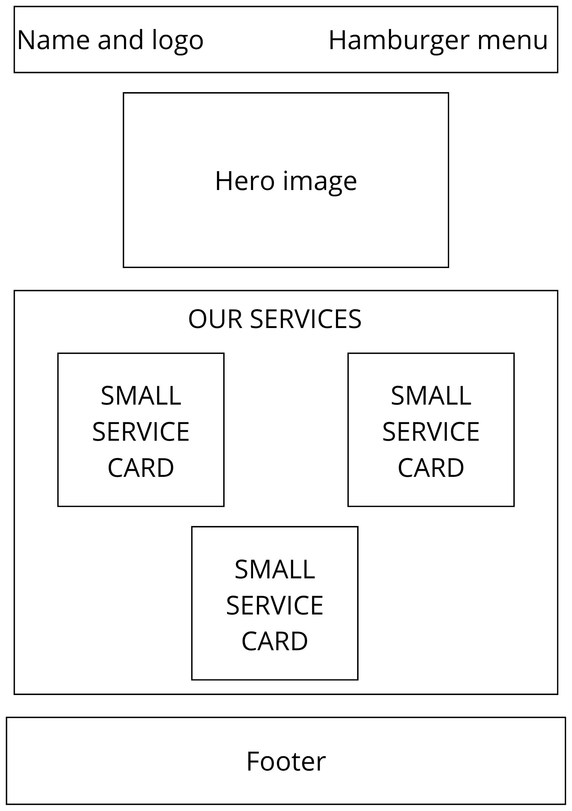

Site Name
BlueGraphic
BlueGraphic was selected because the name combines "Blue," representing the company's visual identity, with "Graphic," which clearly communicates its connection to printing and graphic design. The name is simple, memorable, and appropriate for a modern printing company.
Site Purpose
The BlueGraphic website provides information about the company's printing and graphic design services, helping customers explore available products, learn about the company, and request a quote through an online form. The website is designed to present BlueGraphic as a modern, professional, and accessible printing company while making it easy for customers to find information and contact the business.
Scenarios
The following questions represent common needs that potential BlueGraphic customers may have when visiting the website.
- What printing services does BlueGraphic offer?
- How much would it cost to print 500 business cards?
- Can BlueGraphic print custom flyers for my business?
- How can I request a quote for a printing project?
Color Scheme
The BlueGraphic color scheme uses different shades of blue combined with neutral colors to create a professional, modern, and clean visual identity.
Primary Blue
#2563EB
Buttons, links, accents, and highlighted elements.
Dark Blue
#1E3A8A
Headers, footer, and major headings.
Light Blue
#DBEAFE
Background accents and highlighted sections.
Dark Gray
#1F2937
Body text and other readable content.
Light Gray
#F3F4F6
Section backgrounds and cards.
White
#FFFFFF
Main page background and text on dark backgrounds.
Typography
BlueGraphic will use two fonts to create a modern and readable visual identity.
Poppins
Poppins will be used for the site name, main headings, section headings, and other important visual elements.
Bringing your ideas to print.Inter
Inter will be used for navigation, body text, buttons, forms, labels, and other interface elements.
Professional printing services for your needs.Wireframe
The home page wireframes will show the structure of the BlueGraphic website on small and large viewports. The wireframes will be created separately in black and white, focusing on layout, structure, and functionality.
Small Viewport

Large Viewport
